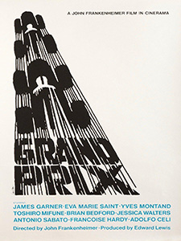
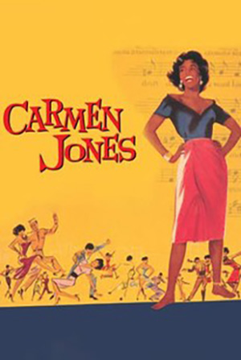

I have looked at the way he brought his graphic design and modernist thinking to the world of the silver screen, and how he created film title sequences unlike anything that had gone before. From his beginnings as a graphic designer in New York, his subsequent move to California, and the designs he created for multiple companies (Bigman, 2012). He got his break in the film industry through director Otto Preminger on Carmen Jones (1954) and worked with legendary directors Alfred Hitchcock and Martin Scorsese (Radatz, 2013). Bass changed film title sequences forever, as well as being a highly influential designer across multiple design disciplines. Fellow Graphic Designer Louis Dorfsman said:
“Saul Bass practiced his craft and magic for more than fifty years. Throughout that time his designs remained provocative and challenging. They remain relevant because they continue to touch people.” (Bass, 2011)
The popularity of his clean style is shown by how in-demand he was (Hardiman, 2022). His timeless logo designs had an average lifespan of thirty-four years. One of his major works is a complete visual branding project for United Airlines, which he began in 1974. His iconic “Tulip” logo was used with minimal alterations until 2004 when United Airlines merged with Continental Airlines.
“A graphic and industrial designer heretofore, I now found myself confronted with a flickering, moving elusive series of images that somehow had to add up to communication.” (Remington, 2003)Bass’s first film title commission was totally unexpected, he received a commission to produce the promotional material for the Otto Preminger film Carmen Jones (1954). Bass describes the conversation that led to him making the title sequence:
“At one point, Otto and I just looked at each other and said `why not make it move? ` It really was as simple as that.” (Remington, 2003)Bass’s next title sequence really showed how different his title sequences were going to be (Radatz, 2013). It was his first all-graphic piece, for director Billy Wilder’s The Seven Year Itch (1955). Partnering with Harold Adler, who provided the typography, the film’s commercial and critical success made Bass the designer for this new style of title sequence. Before Bass, title sequences were simply there by contractual requirement, created by in-house art departments and were often played before the curtains in the cinema were drawn back. But Bass’s new style of title sequence was to start a change, with title sequences increasingly becoming a key part of the film itself.


“The intent of this opening was to create a mood spare, gaunt, with a driving intensity… [that conveyed] the distortion and jaggedness, the disconnectedness and disjointedness of the addict’s life, the subject of the film.” (Art of the Title, 2022)For me, Bass was successful in his aim, by using his own modernist style and principles he created a title sequence that was simple and effective. The sequence does not avoid the controversial content of the film, rather uses abstraction to convey the theme. Preminger rightly saw it as such a key component of the film, that when the film was distributed to cinemas, he included a note to ensure Bass’s sequence was shown with the curtains open (Art of the Title, 2022). Something not guaranteed at the time.
Bass continued to design title sequences for multiple directors right up until 1966. After which he only completed two sequences in the 1970s and four in the 1980s. This coincided with Bass working on his own film projects, including winning an Oscar for his short film Why Man Creates (1968) as well as two further Oscar nominations for Notes on the Popular Arts (1978) and The Solar Film (1980) (IMDb, 2022).
“They made the picture instantly special. And they didn’t stand apart from the movie, they drew you into it, instantly.” (Bass, 2011)He used his title sequences, usually only around two minutes in length, to bring audiences a feeling of anticipation. Bass always paid attention to the overall theme of each film and brought this to the title sequence, never blatantly but through abstraction and inference, skills he had honed in his design work outside film. Saul Bass revolutionised Film Title sequences in numerous ways but the most important was that he made them part of the film.